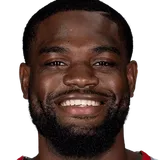

Played 3 seasons for 2 teams; his teams went 27–43 in his games.
Jump to: Record by opponent · Season by season · Teammate help
Compare Greg Brown with…
Final NBA finish, season by season
Title Finals Other playoffs Missed playoffs. #1 = champion; the dashed line is last place that season. Each point opens that season's final standings.
All 30 teams ranked in 2023-24, his best finish (#2)Teammate help
 Luka Doncic5.01 season
Luka Doncic5.01 season Damian Lillard3.01 season
Damian Lillard3.01 season Dereck Lively0.11 season
Dereck Lively0.11 season
Career
Career records (W–L, W − L, with and without) include 2026-27 games through Nov. 23, 2026; season counts and finishes are through 2025-26. Each card opens its board in the same scope. How we count.

Latest completed seasons
Season by season
Newest first; every header sorts. Final NBA finish is the team's rank among all teams that season (#1 = champion) and opens that season's standings. "Without him" uses the team-season window; the span line counts only the games between his first and last game for the team.
| 2023-24 | #2 of 30 | 50–32 61.0% | Lost Finals 1–4 | 6 of 82 | 3–3 50.0% | 47–29 61.8%span: 3–4, gap +7.1 | −11.8 | |
| 2022-23 | #26 of 30 | 33–49 40.2% | Missed playoffs | 16 of 82 | 10–6 62.5% | 23–43 34.8%span: 13–22, gap +25.4 | +27.7 | |
| 2021-22 | #25 of 30 | 27–55 32.9% | Missed playoffs | 48 of 82 | 14–34 29.2% | 13–21 38.2%span: 13–20, gap −10.2 | −9.1 |
On/off, starts and close games
From the lineup data, 1996-97 on. On/off is net points per 100 possessions with him on the floor minus off, a different unit from the win-rate gaps. Started and off the bench are team records in those games; close games are those within 5 points in the last 5 minutes with him on the floor.
Teammate help by season
Help this season = Teammates Score points for honors won that season by teammates who shared a game with him, with every teammate that adds to it. Only honors won in that same season count. How help works.
- 2023-24
 Dallas
Luka Doncic All-NBA 1stAll-Star54 gDereck Lively All-Rookie 2nd0.1252 g
Dallas
Luka Doncic All-NBA 1stAll-Star54 gDereck Lively All-Rookie 2nd0.1252 g
Help this season: 5.125 = 5 Luka Doncic + 0.125 Dereck Lively
Other teammates (no honors that season): Dwight Powell 6 g, Tim Hardaway Jr 6 g, Olivier-Maxence Prosper 6 g, Jaden Hardy 6 g, AJ Lawson 6 g, Derrick Jones 6 g, Grant Williams 5 g, Dante Exum 4 g, Seth Curry 4 g, Markieff Morris 4 g, Richaun Holmes 3 g, Dexter Dennis 2 g, Kyrie Irving 1 g, Brandon Williams 1 g and 1 more
- 2022-23
 Portland
Damian Lillard All-NBA 3rdAll-Star312 g
Portland
Damian Lillard All-NBA 3rdAll-Star312 g
Help this season: 3 = 3 Damian Lillard
Other teammates (no honors that season): Jabari Walker 16 g, Shaedon Sharpe 16 g, Jusuf Nurkic 15 g, Jerami Grant 15 g, Drew Eubanks 15 g, Anfernee Simons 15 g, Josh Hart 14 g, Trendon Watford 13 g, Keon Johnson 12 g, Nassir Little 8 g, Justise Winslow 8 g, Gary Payton II 6 g, John Butler 4 g
- 2021-22PortlandHelp this season: 0, no honored teammate
Record against each opponent
Regular season, through 2025-26 (2026-27 games not included): 70 games, 27–43, against 26 franchises.
Grouped by franchise (named as today); game lists keep each team's name that season. Filters and the tab are kept in the URL, so a filtered view can be shared.
| Games list | |||||||
|---|---|---|---|---|---|---|---|
| 6 | 2–4 | 33.3% | −2 | N/A | 2021-22 to 2022-23 | ||
| 6 | 2–4 | 33.3% | −2 | N/A | 2021-22 to 2023-24 | ||
| 6 | 2–4 | 33.3% | −2 | N/A | 2021-22 to 2023-24 | ||
| 5 | 2–3 | 40.0% | −1 | N/A | 2021-22 to 2023-24 | ||
| 5 | 1–4 | 20.0% | −3 | N/A | 2021-22 to 2022-23 | ||
| 4 | 2–2 | 50.0% | 0 | N/A | 2021-22 to 2022-23 | ||
| 3 | 3–0 | 100.0% | +3 | N/A | 2021-22 to 2022-23 | ||
| 3 | 1–2 | 33.3% | −1 | N/A | 2021-22 to 2022-23 | ||
| 3 | 0–3 | 0.0% | −3 | N/A | 2021-22 | ||
| 3 | 1–2 | 33.3% | −1 | N/A | 2021-22 to 2022-23 | ||
| 2 | 1–1 | 50.0% | 0 | N/A | 2021-22 to 2022-23 | ||
| 2 | 1–1 | 50.0% | 0 | N/A | 2021-22 to 2022-23 | ||
| 2 | 1–1 | 50.0% | 0 | N/A | 2021-22 | ||
| 2 | 2–0 | 100.0% | +2 | N/A | 2021-22 | ||
| 2 | 0–2 | 0.0% | −2 | N/A | 2021-22 to 2022-23 | ||
| 2 | 0–2 | 0.0% | −2 | N/A | 2021-22 to 2023-24 | ||
| 2 | 0–2 | 0.0% | −2 | N/A | 2021-22 | ||
| 2 | 1–1 | 50.0% | 0 | N/A | 2021-22 | ||
| 2 | 1–1 | 50.0% | 0 | N/A | 2021-22 | ||
| 2 | 2–0 | 100.0% | +2 | N/A | 2023-24 | ||
| 1 | 0–1 | 0.0% | −1 | N/A | 2021-22 | ||
| 1 | 0–1 | 0.0% | −1 | N/A | 2021-22 | ||
| 1 | 0–1 | 0.0% | −1 | N/A | 2021-22 | ||
| 1 | 0–1 | 0.0% | −1 | N/A | 2021-22 | ||
| 1 | 1–0 | 100.0% | +1 | N/A | 2021-22 | ||
| 1 | 1–0 | 100.0% | +1 | N/A | 2021-22 |
Rows add up to his career record in his games. A playoff series counts when he played in it; early round-robin games show as games only. How we count.
Arrival and departure
Team wins per 82 games the season before he arrived vs his first season there, and his last season vs the season after he left. He leaves a team only when his next season with games is for another team (or he never plays again); whole seasons he missed and came back from are one "Missed" row with the team's record without him. Per 82 so short seasons compare fairly. These are team records, not a measure of what he did.
| Left | after 2023-24 | 2023-24: 50–32 50.0 per 82 | 2024-25: 39–43 39.0 per 82 without him | −11.0 wins | |
| Arrived | 2023-24 | 2022-23: 38–44 38.0 per 82 | 2023-24: 50–32 50.0 per 82 | +12.0 wins | |
| Left | after 2022-23 | 2022-23: 33–49 33.0 per 82 | 2023-24: 21–61 21.0 per 82 without him | −12.0 wins | |
| Debut | 2021-22 | 2020-21: 42–30 47.8 per 82 | 2021-22: 27–55 27.0 per 82 | −20.8 wins |
With and without his teammates
His 12 teammates with the most regular-season games together. "Together" is the team's record in the games both played for it; "Without him" is the team's record in the games Greg Brown played for that team while the teammate was on it (between the teammate's first and last game for the team, the appearance span) and the teammate did not play. Fewer than 20 games without him: no gap. Games through Nov. 23, 2026. How we count.

- Together
- 13–32 28.9%
- Without him
- 1–2 33.3%
- Gap
- Too few games without him
 Trendon WatfordPortland 2021-22 to 2022-23
Trendon WatfordPortland 2021-22 to 2022-23- Together
- 17–27 38.6%
- Without him
- 1–3 25.0%
- Gap
- Too few games without him
 Anfernee SimonsPortland 2021-22 to 2022-23
Anfernee SimonsPortland 2021-22 to 2022-23- Together
- 22–21 51.2%
- Without him
- 0–4 0.0%
- Gap
- Too few games without him
 Ben McLemorePortland 2021-22
Ben McLemorePortland 2021-22- Together
- 12–30 28.6%
- Without him
- 2–4 33.3%
- Gap
- Too few games without him
 Jusuf NurkicPortland 2021-22 to 2022-23
Jusuf NurkicPortland 2021-22 to 2022-23- Together
- 22–18 55.0%
- Without him
- 0–4 0.0%
- Gap
- Too few games without him
 Drew EubanksPortland 2021-22 to 2022-23
Drew EubanksPortland 2021-22 to 2022-23- Together
- 11–23 32.4%
- Without him
- 1–0 100.0%
- Gap
- Too few games without him
 Keon JohnsonPortland 2021-22 to 2022-23
Keon JohnsonPortland 2021-22 to 2022-23- Together
- 10–22 31.2%
- Without him
- 2–2 50.0%
- Gap
- Too few games without him

Keljin BlevinsPortland 2021-22- Together
- 3–25 10.7%
- Without him
- 6–6 50.0%
- Gap
- Too few games without him

- Together
- 13–13 50.0%
- Without him
- 1–1 50.0%
- Gap
- Too few games without him
- Damian LillardPortland 2021-22 to 2022-23
- Together
- 13–10 56.5%
- Without him
- 3–4 42.9%
- Gap
- Too few games without him
- Nassir LittlePortland 2021-22 to 2022-23
- Together
- 11–12 47.8%
- Without him
- 7–4 63.6%
- Gap
- Too few games without him
 Dennis SmithPortland 2021-22
Dennis SmithPortland 2021-22- Together
- 9–13 40.9%
- Without him
- 0–3 0.0%
- Gap
- Too few games without him